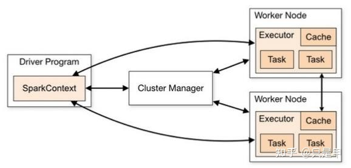

TreeviewCopyright © qgao 2021-* all right reserved, powered by aleen42
Spark 核心组件

SparkContext将资源需求提交给Cluster Manager，Cluster Manager根据需求分配资源；SparkContext将Task提交给Executor运行(Executor=Cache + Task)，Executor返回结果给SparkContext。
1 Cluster Manager (Master,ResourceManager)
Spark的集群管理器，主要负责对整个集群资源的分配与管理。
Cluster Manager：
- 在 Yarn 部署模式下为 ResourceManager
- 在 Mesos 部署模式下为 Mesos Master
- 在 Standalone 部署模式下为 Master.
一般在Yarn部署的情况多一些。
2 Worker (worker,NodeManager)
Spark 的工作节点。
在 Yarn 部署模式下实际由 NodeManager 替代. 主要负责以下工作:
- 将自己的内存, CPU 等资源通过注册机制告知 Cluster Manager
- 创建 Executor
- 将资源和任务进一步分配给 Executor
- 同步资源信息, Executor 状态信息给 ClusterManager 等
3 Driver
Spark 驱动器节点，用于执行 Spark 任务中的 main 方法，负责实际代码的执行工作。
Driver 在 Spark 作业执行时主要负责:
- 将用户程序转化为作业（Job）
- 在 Executor 之间调度任务（Task）
- 跟踪 Executor 的执行情况
- 通过 UI 展示查询运行情况
4 Executor
Spark Executor 节点是负责在 Spark 作业中运行具体任务，任务彼此之间相互独立。
Spark 应用启动时，Executor 节点被同时启动，并且始终伴随着整个 Spark 应用的生命周期而存在。 如果有 Executor 节点发生了故障或崩溃，Spark 应用也可以继续执行，会将出错节点上的任务调度到其他 Executor 节点上继续运行。
Executor 有2个核心功能：
- 负责运行组成 Spark 应用的任务，并将结果返回给驱动器（Driver）
- 它们通过自身的块管理器
Block Manager为用户程序中要求缓存的 RDD 提供内存式存储。RDD 是直接缓存在 Executor 进程内的，因此任务可以在运行时充分利用缓存数据加速运算。
5 Application
用户使用 Spark 提供的 API 编写的应用程序
- Application 通过 Spark API 将进行 RDD 的转换和 DAG 的构建, 并通过 Driver 将 Application 注册到 Cluster Manager.
- Cluster Manager 将会根据 Application 的资源需求, 通过一级分配将 Executor, 内存, CPU 等资源分配给Application.
- Driver 通过二级分配将 Executor 等资源分配给每一个任务, Application 最后通过 Driver 告诉 Executor 运行任务